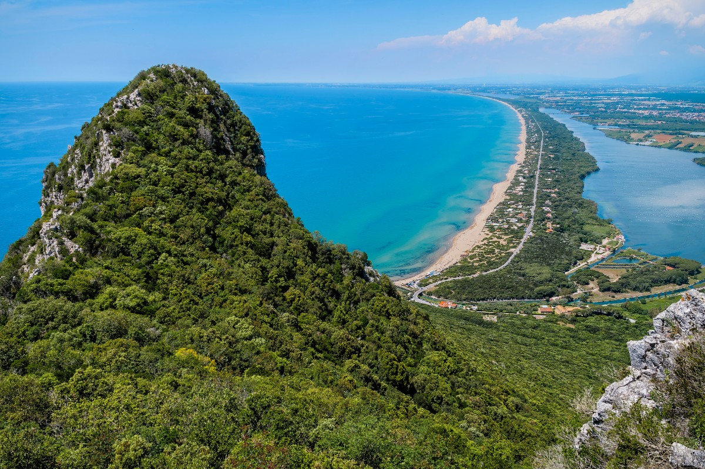

La Storia

Fu istituito, nel 1934, dall'Amministrazione Forestale del tempo, per volere di Benito Mussolini, dietro suggerimento del Sen. Raffaele Bastianelli, al fine di tutelare gli ultimi resti delle Paludi Pontine che proprio in quegli anni venivano bonificate. Natale Prampolini, il senatore e l'ingegnere che progettò la bonifica dell'Agro pontino,
fu infatti premiato da Vittorio Emanuele III col conferimento del titolo di conte del Circeo nel 1941. È l'unico parco nazionale italiano a estendersi completamente in un ambiente marino di pianura. Il parco nazionale del Circeo è inoltre una “riserva della biosfera” dell'UNESCO dal 1997, ed è stato candidato al titolo di "patrimonio dell'umanità".
Già previsto dalla legge quadro sulle Aree Protette (L. 394/1991), solo nel 2005 il DPR 155/2005 ha dato il via all'istituzione dell'Ente Parco, iter conclusosi nel 2007 con la nomina del Presidente e del Consiglio Direttivo; primo presidente è stato Gaetano Benedetto, primo direttore Giuliano Tallone; in precedenza il Parco è stato retto da un Commissario Straordinario, il Gen. Salvatore Armando Bellassai, già sindaco di Sabaudia, e da un Direttore f.f. del Corpo Forestale dello Stato, Pietro Oieni.
L'isola di Zannone
Zannone è una piccola isola entrata a far parte del Parco nel 1979; è disabitata e ricoperta da boschi di lecci e querce. Tra le isole ponziane, è l'unica ad aver conservato intatta la propria copertura vegetale. Presenta motivi di interesse in ogni stagione: dalle spettacolari fioriture dell'erica, durante il periodo autunnale, alle migliaia di uccelli che vi sostano durante i periodi di passo (migrazioni), alle attrattive paesaggistiche e marine. Dal punto di vista della flora troviamo: sulla scogliera l'elicriso che, salendo, viene sostituito dal lentisco, dal mirto e dall'erica; più in alto la ginestra, la fillirea, l'euforbia arborea che, man mano, lasciano il posto al corbezzolo e al leccio; a settentrione, invece,
troviamo boschi di lecci, con eriche e allori. Tra gli animali selvatici, è presente il muflone, introdotto sull'isola negli anni venti del XX secolo e ora specie protetta.